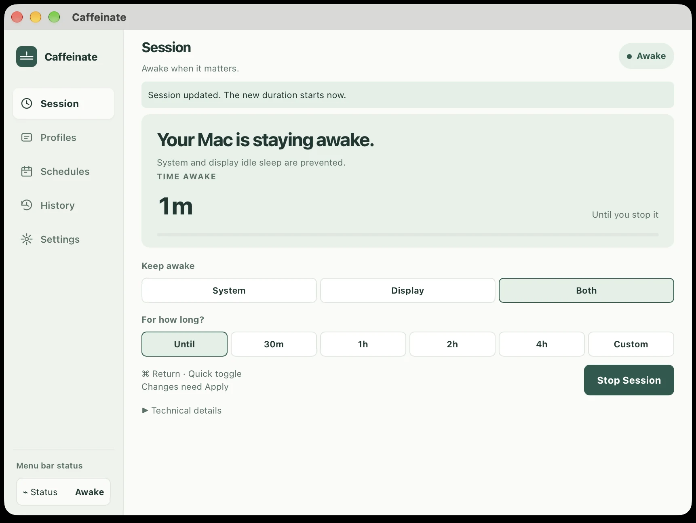

One unmistakable switch.
Start or stop an owned wake session in a click. See its real state, its remaining time, and the exact macOS command.
Keep your Mac working through long builds, downloads, presentations and everything in between. No complicated setup. Just you, your work, and one clear switch.

Some jobs just need time. Caffeinate gives your Mac that time without digging through system settings or adding another cloud service.
Start or stop an owned wake session in a click. See its real state, its remaining time, and the exact macOS command.
Stay awake until stopped, use a preset, or set a custom duration. Adjust the active session when plans change.
Hide the window without ending the session. Keep status and quick controls within reach, then quit to release the assertion.
MEET CAFFEINATE 3.0
Every screen has a purpose. Explore real captures from the macOS app, from a running session to schedules and preferences.
01 / 05
Choose System, Display or Both. Pick a duration, see the running state, and stop instantly when you're done.
WHAT YOU'RE SEEING
A live wake session with an explicit stop action.
Captured from Caffeinate 3.0 beta on macOS. Release readiness and distribution are separate from this preview.
Purpose-built with Rust and Tauri, Caffeinate controls macOS's own
/usr/bin/caffeinate process. Your Mac stays awake for the session you
choose, not forever.
/usr/bin/caffeinate -i -w <app-pid>
Prevent idle system sleep, display sleep, or both. You always know which mode is active.
Until stopped, 30 minutes, 1, 2, or 4 hours, or any custom duration from 1 to 1440 minutes.
Keep useful configurations close. Scheduled actions run only while Caffeinate itself is running.
Local history, optional notifications and login launch, light and dark appearance. No cloud connection or telemetry.
NOW AND NEXT
Caffeinate 3.0 is an unreleased beta preview. For an installable published version today, use the existing stable release.
View published releasesThe redesigned Stillwater interface, native menu bar, custom profiles, schedules and more. Available locally in source and beta builds; not yet a published release.
Download the currently published version or install via the existing Homebrew tap.
Get published versionbrew install --cask AungMyoKyaw/homebrew-tap/caffeinate
Nothing hidden behind an account, plan or complicated setup.
In 3.0, closing the window hides it in the menu bar while an active session continues. Choosing Quit releases the app-owned sleep assertion.
No. Caffeinate controls idle system and display sleep only. It cannot override normal MacBook lid-close behavior.
No. They are one-time, local actions checked while the app is running. They cannot wake a sleeping Mac or continue after Quit.
No account, cloud sync, tracking or telemetry is required. The application manages the built-in macOS utility locally.
Not yet. This site previews the local 3.0 beta. The published release and Homebrew installation remain separate until 3.0 has passed its release checks.